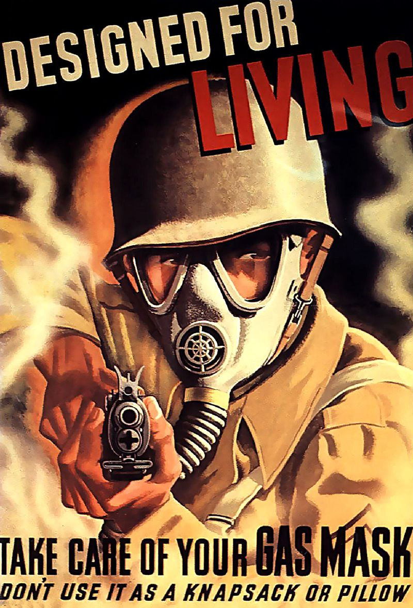

Протигаз — пристрій для захисту органів дихання,  очей і обличчя людини від отруйних, радіоактивних речовин, бактерій, що знаходяться в повітрі у вигляді пари, газів або аерозолів. На нафтогазодобувних, вугільних і гірничорудних підприємствах застосовуються фільтруючі та ізолюючі протигази. Протигаз був винайдений видатним українським ученим Зелінським Миколою Дмитровичем в 1915 році. Саме з того часу почалося створення протигазів, що і викликало їх різноманітність.
Цей сайт був створенний, щоб об'єднати інформацію про різні прототипи протигазів в одному місці, щоб всі бажаючі могли ознаяйомитися та відкрити для себе щось нове та цікаве.